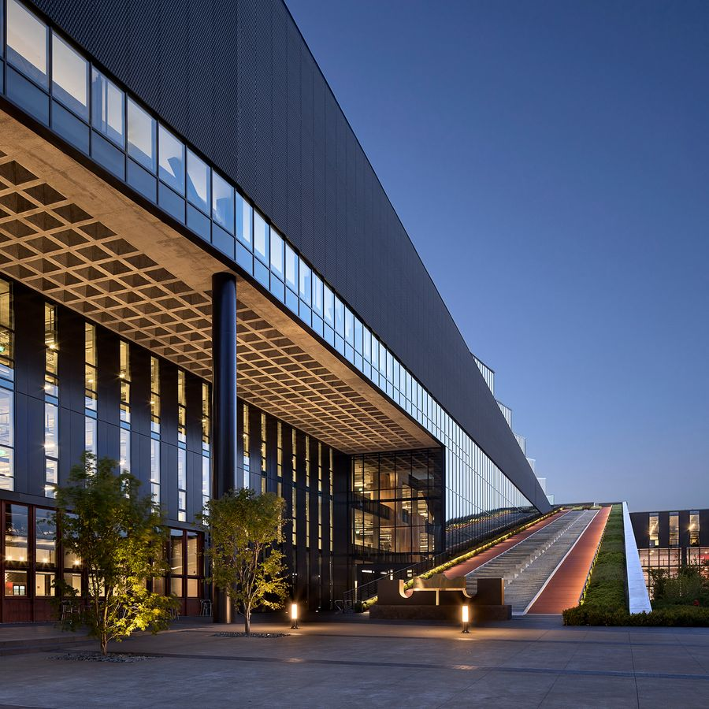
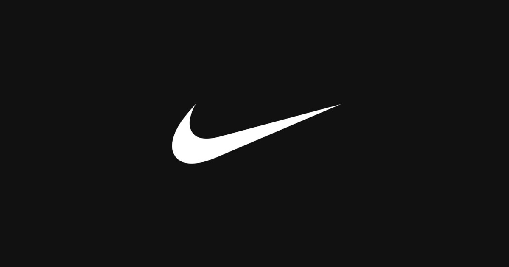

A marca mais forte do esporte está tentando voltar a jogar no ataque.
Nike não perdeu a relevância cultural. Perdeu, por enquanto, velocidade, frescor de produto e execução em alguns mercados. A tese é uma reconstrução: a força da marca financia o turnaround, mas a recuperação precisa aparecer em produto, wholesale, margem e China.
Um ativo de marca extraordinário, atravessando uma fase operacional ordinária.
O valor da Nike está na combinação rara entre marca global, inovação, distribuição, atletas, dados de consumo e escala. O problema atual não é falta de ativos; é transformar esses ativos novamente em desejo, crescimento e margem.
Nike vende produtos; o que monetiza é identificação.
A companhia desenha, desenvolve, comercializa e vende calçados, roupas, equipamentos e serviços esportivos sob Nike, Jordan e Converse. O produto é físico, mas a preferência é emocional: o consumidor compra performance, identidade e pertencimento.
Performance volta ao centro
Running, basquete, futebol, training e esportes femininos são campos para recuperar relevância de produto.
Nike Running ↗
Marca ainda é o ativo central
O desafio é transformar capital cultural em inovação percebida e frequência de compra.
About Nike ↗Win Now precisa fazer três coisas ao mesmo tempo.
Sport offense
Recolocar performance e inovação no centro, começando por running e expandindo para outras categorias.
Wholesale saudável
Reconstruir distribuição física e presença nos parceiros sem destruir a percepção premium da marca.
Consumer direct
Melhorar a experiência digital e as lojas próprias, mas sem tratar o canal direto como dogma.
Nike, Jordan e Converse não têm o mesmo papel econômico.
NIKE Brand
Motor global de performance e lifestyle, responsável pela maior parte da receita e do investimento em inovação.
Jordan
US$7,0 bilhões em FY26: uma marca dentro da Nike com poder cultural, pricing e risco próprio de saturação.
Converse
US$1,2 bilhão em FY26, em forte queda. Pode ser opção de recuperação, mas hoje é uma fonte de pressão.
A recuperação não precisa de um novo Swoosh. Precisa de vários acertos menores.
Momentum de produto e conexão com atletas pode reabrir o ciclo de inovação.
Mais distribuição pode reduzir dependência de promoções e melhorar disponibilidade.
Menos liquidação, melhor mix e supply chain mais eficiente são essenciais.
Uma recuperação lenta pode impedir que o crescimento global volte a aparecer.
O risco não é a Nike deixar de ser famosa. É deixar de ser a escolha mais desejada.
Competição
On, Hoka, New Balance, ASICS, adidas e marcas emergentes disputam inovação e atenção.
China
O FY26 terminou com receita da Nike Brand na China 13% menor em moeda constante.
Canal
O Direct caiu 8% em moeda constante; o wholesale voltou a crescer, mas a execução precisa ser equilibrada.
Margem
Descontos, tarifas, mix e estoque podem atrasar a recuperação do lucro.
O conteúdo deste relatório é estritamente informativo e educacional. As análises aqui apresentadas não constituem recomendações de compra, venda ou manutenção de quaisquer ativos financeiros. O leitor é integralmente responsável por suas próprias decisões de investimento.